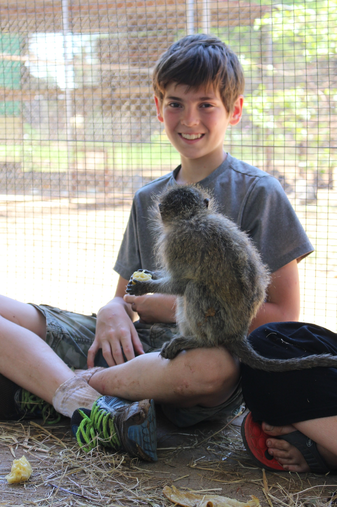
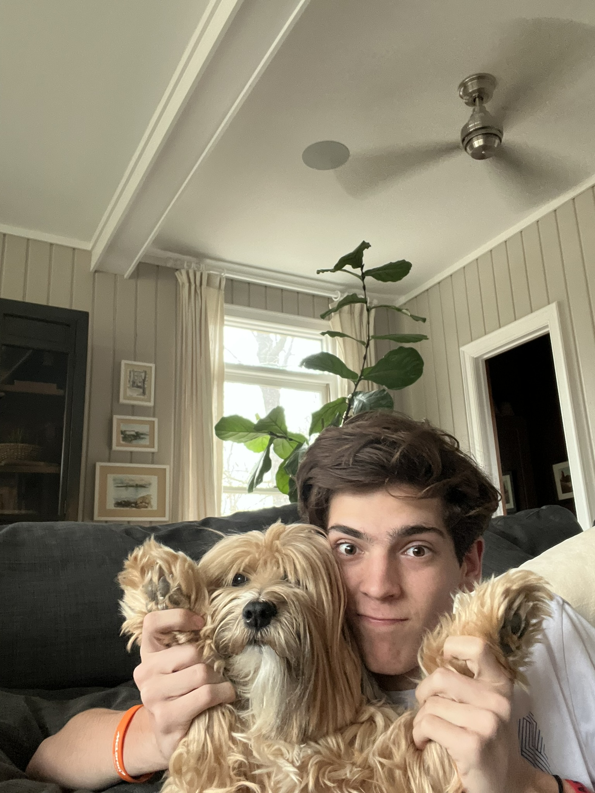
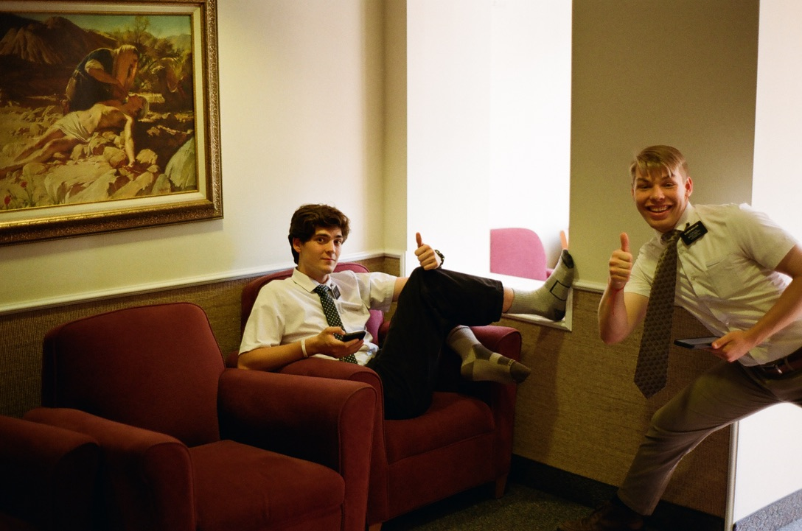

Background
My Story

San Francisco, CA
The Early Years
I was born in Orem, Utah and moved around a lot as a kid, eventually living for a while in San Francisco — where this photo was taken!
A Childhood of Travel
My childhood was focused more than anything else on travel. I grew up mainly in Europe and Asia. This picture was taken on a trip where I lived at a Monkey Rehabilitation Center in South Africa — I was often lucky enough to have experiences like this all around the world.

Cape Town, South Africa

Charlotte, North Carolina
High School
At the start of high school I moved from Africa back to the States — Charlotte, North Carolina — where I attended all four years. I played sports, built a wonderful group of friends, but my favorite thing in the world was my dog, Ani, who is in the picture.
Mission
After high school I attended BYU for a year and then left to serve a mission in Boston, Massachusetts. It was the most amazing experience and helped me understand what I wanted to do and study.

Cambridge, Massachusetts

Jackson Hole, Wyoming
Today
After my mission I returned to BYU where I am currently studying Pre-Business. I still love to travel whenever I can — here is a recent trip I took to Jackson Hole, WY. Check out my links below to see my résumé and everywhere I've been!